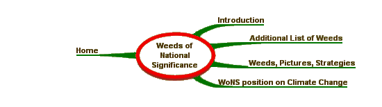
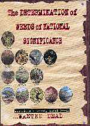
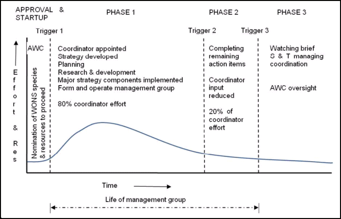
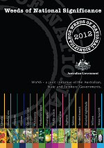
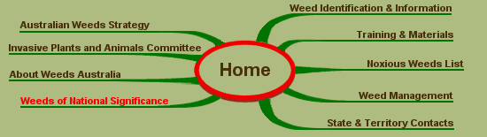

Weeds of National Significance
|
Weeds of National Significance Strategies, Resources and Comments Introduction On 1 June 1999 the inaugural list of Weeds of National Significance (WoNS) was announced jointly by Commonwealth Ministers:
The process for determining WoNS has been published including all maps and data. The Determination of Weeds of National Significance It is available on the web at: In agreeing to this approach ministers agreed that the initiative would need to be reviewed to assess the effectiveness and efficiency of the species management. A review of each strategic management plan after five years of action was proposed. A number of background papers relating to the inaugural list are available, describing different aspects of WoNS. These are listed below and may be downloaded using Adobe Acrobat Reader.
The documents are in 'PDF' format and require Adobe Acrobat Reader. If you do not have Adobe Acrobat Reader, click here to download now. Since the species announcement much work has been undertaken in managing the 20 species with information available on the weed specific pages for the individual species. Additional List of Weeds of National Significance – April 2012 An independent review in 2007 concluded that a nationally strategic approach had been highly successful, leveraging consistent multi-jurisdictional activity on high priority species. This initial review was followed up by a detailed review of all species by the Australian Weeds Committee (AWC) in 2009 and 2010. The AWC reviewed the extent to which all 20 national strategies had been implemented and looked broadly at the capacity for national coordination of additional WoNS species in future. The Natural Resource Management Ministerial Council (Resolution 15.7, 21 May 2009) endorsed a three phased approach to national management of the WoNS species (see Figure 1, below). This aims to make the most cost-effective use of limited ‘national coordination’ resources available from public funds.  Key to this phased approach is the intention to phase out species now being effectively managed and a call for further species nominations and subsequent endorsement of additional WoNS species. The AWC is implementing these reforms. While the national coordination of the inaugural 20 WoNS species has already transitioned to phases 2 and 3 (phase 3 attributes), no species have yet been removed from the WoNS list. The AWC is developing a protocol to guide future decisions about when this should occur on a case by case basis. Jurisdictions nominated candidate additional species in 2010. The Australian Bureau of Agricultural and Resource Economics and Sciences (ABARES) assessed the candidates and the AWC endorsed twelve additional ‘species’ to be listed as WoNS. The AWC’s Chairman, Dr Jim Thompson, announced these additional plant species as WoNS on 20 April 2012. Additional information on the selection of these species is available here. The inaugural and 2012 additional list are below, accompanied by links to dedicated species pages. A summary booklet reporting on the WoNS for 2012 is available for download. |
||||||||||||
Additional List of Weeds of National Significance – April 2012
All of the WoNS have now transitioned to phase 3 (State and Territory Coordination). As of November 2013, all of the Strategic Plans for the initial 20 WoNS and additional 12 WoNS have been approved by the committee. The national strategy for each WoNS is available for download at its respective page on this site. SITE MAP 
Australian Weeds Strategy | Weed Identification | Australian Weeds Committee |
||||||||||||
|
Site Content and Operation: John Thorp Australia Telephone: (03) 6344 9657 Fax: (03) 6343 1877 |
Site Design - Computer Support Tasmania | |
| © Australian Weeds Committee |